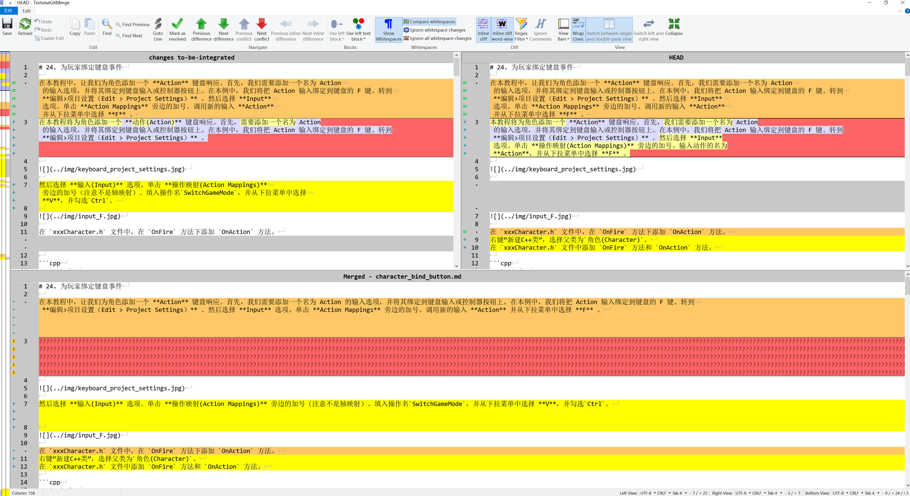

使用 TortoiseGit 解决冲突
在发生冲突的文件中，冲突区域会有标记，比如：
<<<<<<< yours
你当前工作区的代码
=======
合并过来的代码
>>>>>>> their
可以使用任何编辑器手动解决冲突，也可以通过 TortoiseGit 提供的菜单解决冲突：选中冲突文件，在右键菜单中选择TortoiseGit → Edit Conflicts ，启动外部合并工具/冲突编辑器手动解决冲突。

图中的左右窗口用于比较两个版本，下方窗口显示合并结果。操作前先查看窗口标题中的文件名和版本，确认哪边是当前版本、哪边是要合入的版本；要合入的内容也可能来自另一个本地分支，不能只按“远程”和“本地”判断。
在合并处，鼠标右击：
Use text block from left：保留左侧选中的内容。Use text block from right：保留右侧选中的内容。Use text block from right before left：两侧内容都保留，右侧内容放在前面。Use text block from left before right：两侧内容都保留，左侧内容放在前面。
保存后还需要做什么
- 使用
Next difference逐处检查，确认最终内容正确。两侧都保留时，也要检查是否出现重复段落或重复代码。 - 点击
Save保存合并结果，再选择Mark as resolved，或回到文件的右键菜单选择TortoiseGit → Resolved。 - 打开文件检查冲突位置，确认
<<<<<<<、=======、>>>>>>>等冲突标记已经处理完。对于教程里原本就有的标记示例，应保留其内容。 - 检查修改后的文档页面或运行相关程序，再完成本次操作：普通合并需要提交合并结果；如果冲突出现在 Cherry-pick 或 Rebase 过程中，应回到对应窗口继续，不要另开普通提交窗口。
- 查看提交记录，确认操作完成后推送当前分支，远程 PR 才能收到这次修改。
Mark as resolved 只是告诉 Git 这个文件已处理，不会替你选择正确内容，也不等于已经提交或推送。